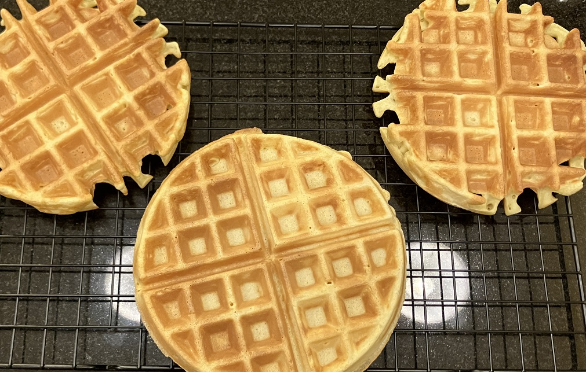

华夫饼 ★ No Soda Waffle
 2 servings
2 servings 20 minutes
20 minutes-
 xiachufang
xiachufang
 Sweet
Sweet
无泡打粉华夫饼(早餐机版)

- 2 个 鸡蛋
- 15-30 g 糖
准备鸡蛋，蛋黄蛋清分离，蛋清加入糖(自己适量添加)，用手持搅拌器/打蛋器打5-7分钟，打发蛋白直到泡沫立体不倒，放置一边备用。
- 120 g 低筋面粉
- 140 g 牛奶
准备低筋面粉，中筋也可，与剩余蛋黄放一起，加入牛奶。
- 30 g 黄油
取黄油，小碗微波炉加热化开，跟面粉鸡蛋牛奶混在一起，搅拌均匀，再加入打发的蛋白，Z字形翻拌均匀，避免过度消泡。
- -—–
取饼机，以1000w为例，3/4-1杯为一个饼的量，以上组合可以出2杯左右，饼机烹饪大约5分钟左右即可。
- -—–
出锅后放凉即可食用，放置。
- -—–
也可冻入冰柜，之后取出烤箱10分钟即可。